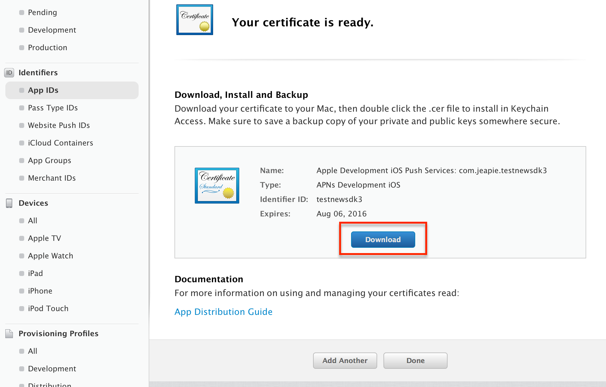

Generating an iOS Push Certificate
The goals of this section are to provision your app with Apple and grant Jeapie access to manage your notifications.
1. Create Certificate Signing Request
1.1 Open Keychain Access on your Mac (it is located in Applications/Utilities) and choose the menu option Request a Certificate from a Certificate Authority….
1.2 Save Certificate
You should now see the following window:

Enter your email address here. Some people recommend using the same email address that you used to sign up for the iOS Developer Program, but it seems to accept any email address just fine.
Check Saved to disk and click Continue.
2. Enable Push Notifications and apply the Certification Request to generate Certificate
2.1 Select your app on the Apple's Developer site and press "Edit"
2.2 Scroll down to the bottom, enable Push Notifications and press "Create Certificate..." in either Development or Production section.
Here's the difference between each kind of certificates:
-
Sandbox Push Certificate (Also known as Development) - For sending push notifications to a development version of your app that was built with an Apple Development provisioning profile.
-
Production Push Certificate - For production builds that are built with an Apple "App Store" provisioning profile and are submitted to the “App store” provisioning profile, or for testing push notifications in an Ad-Hoc build built with an Apple "Ad Hoc" provisioning profile.
Basically, you will want to start with a Sandbox (Development) Push Certificate when developing or updating your app. Then, build your app with an "Ad Hoc" Provisioning Profile and Production Push Certificate. Make sure it receives push notifications before submitting it. Finally, continue using the production push certificate when submitting your app.
2.3 Press Continue
2.4 Press "Choose File..", select the "certSigningRequest" file you saved in Step 1, open, and then press "Generate".

2.5 Press "Download" to save your certificate

3. Creating a p12 File
3.1 Open the .cer file you downloaded in the last step by double clicking on it in Finder.

3.2 After a few seconds the "Keychain Access" program should pop up. Select Login > Keys, then right click on your key in the list and select "Export"
3.3 Give the unique name to file and press save. You will have an option to protect the file with a password. Please don't protect this file with a password!
4. Upload Your Push Certificate to Jeapie
4.1 At the Step 2 "Push notification settings" please select the Production or Development APNS push services.
4.2 Select the .p12 you exported without a password and press Save.
Congratulations! Jeapie is now set up to push out notifications to your app!
Next, install the Jeapie SDK for your app iOS Native SDK Installation